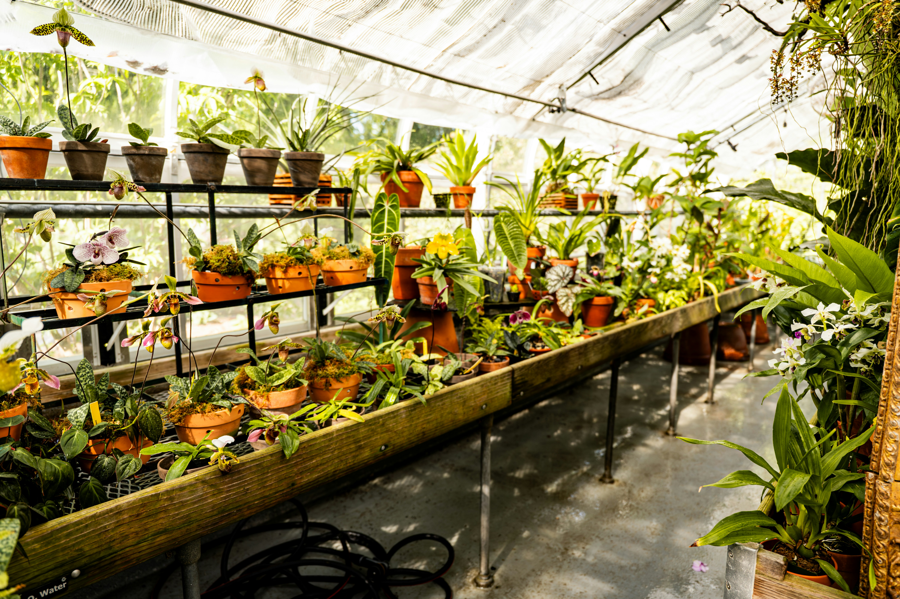

María Gutierrez
Fundadora
VIVERO RAÍZ - DESDE 1998
Vivero Raíz es un emprendimiento familiar que nace en Escobar, Provincia de Buenos Aires, en el año 1998 de la mano de María Gutierrez y Carlos Aguirre.
Ambos aficionados por la naturaleza, comenzaron con este proyecto cuyo objetivo era transmitir la pasión por las plantas y la jardinería.

No somos solo un equipo, somos una familia que transmite amor en cada planta que cultivamos y en cada servicio que ofrecemos.
Fundadora
Co-fundador
Vendedora
Asesora
Envíos y Distribución